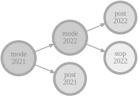

Cylc (“silk”) is a workflow engine - it orchestrates complex distributed suites of interdependent tasks. As well as ordinary one-off workflows, it handles continuous workflows of cycling tasks (such as used in weather and climate forecasting and related areas).
Cylc was originally developed for operational environmental forecasting at NIWA by Dr Hilary Oliver, and is now an Open Source collaboration involving NIWA, Met Office, and others. It is available under the GPL v3 license.

Suites are defined in a human-readable text
format - so you can use standard software development power tools for suite
development (see here for why this is a
good thing).
Configure scheduling with an efficient graph
notation, and task runtime properties in an efficient inheritance hierarchy
(to factor out all commonality).
Scheduling of cycling systems is not restricted
by a global time loop (cycles can interleave as dependencies allow); suites
flow around failed or delayed tasks; and they adapt to insertion and removal of
tasks.
Cylc has low admin overhead and a small
security footprint, because there is no central server process to manage
workflows for all users.
Plus many other
features to support both clock-triggered real time and free-flow
metascheduling in research and operational environments.
Please let us know if your organization should be included in the list of cylc users.